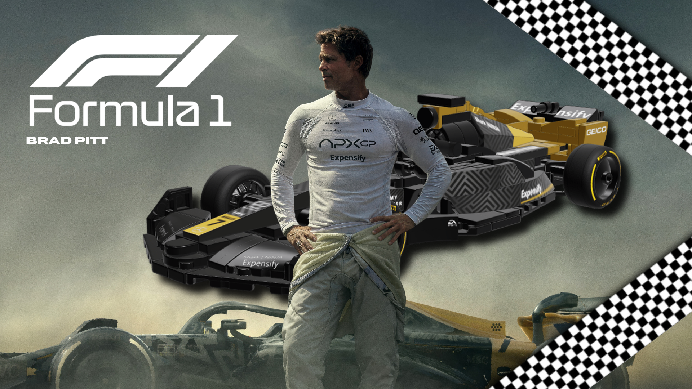

FILME

FÓRMULA 1
Na década de 1990, Sonny Hayes era o piloto mais promissor da Fórmula 1 até que um acidente na pista quase encerrou sua carreira. Trinta anos depois, o proprietário de uma equipe de Fórmula 1 em dificuldades convence Sonny a voltar a correr e se tornar o melhor do mundo.